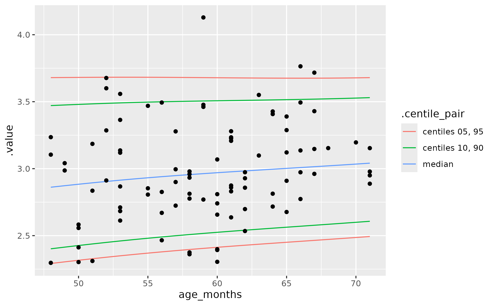

Fit a generalized gamma regression model (for speaking rate)
Source:R/model-rate.R
gen-gamma-rate.RdThe function fits the same type of GAMLSS model as used in Mahr and colleagues (2021): A
generalized gamma regression model (via gamlss.dist::GG()) with natural
cubic splines on the mean (mu), scale (sigma), and shape (nu) of the
distribution. This model is fitted using this package's mem_gamlss()
wrapper function.
Usage
fit_gen_gamma_gamlss(
data,
var_x,
var_y,
df_mu = 3,
df_sigma = 2,
df_nu = 1,
control = NULL
)
fit_gen_gamma_gamlss_se(
data,
name_x,
name_y,
df_mu = 3,
df_sigma = 2,
df_nu = 1,
control = NULL
)
predict_gen_gamma_gamlss(newdata, model, centiles = c(5, 10, 50, 90, 95))Source
Associated article: https://doi.org/10.1044/2021_JSLHR-21-00206
Arguments
- data
a data frame
- var_x, var_y
(unquoted) variable names giving the predictor variable (e.g.,
age) and outcome variable (.e.g,rate).- df_mu, df_sigma, df_nu
degrees of freedom. If
0is used, thesplines::ns()term is dropped from the model formula for the parameter.- control
a
gamlss::gamlss.control()controller. Defaults toNULLwhich uses default settings, except for setting trace toFALSEto silence the output from gamlss.- name_x, name_y
quoted variable names giving the predictor variable (e.g.,
"age") and outcome variable (.e.g,"rate"). These arguments apply tofit_gen_gamma_gamlss_se().- newdata
a one-column dataframe for predictions
- model
a model fitted by
fit_gen_gamma_gamlss()- centiles
centiles to use for prediction. Defaults to
c(5, 10, 50, 90, 95).
Value
for fit_gen_gamma_gamlss() and fit_gen_gamma_gamlss_se(), a
mem_gamlss()-fitted model. The .user data in the model includes degrees
of freedom for each parameter and the splines::ns() basis for each
parameter. For predict_gen_gamma_gamlss(), a dataframe containing the
model predictions for mu, sigma, and nu, plus columns for each centile in
centiles.
Details
There are two versions of this function. The main version is
fit_gen_gamma_gamlss(), and it works with unquoted column names (e.g.,
age). The alternative version is fit_gen_gamma_gamlss_se(); the final
"se" stands for "Standard Evaluation". This designation means that the
variable names must be given as strings (so, the quoted "age" instead of
bare name age). This alternative version is necessary when we fit several
models using parallel computing with furrr::future_map() (as when using
bootstrap resampling).
predict_centiles() will work with this function, but it will likely throw a
warning message. Therefore, predict_gen_gamma_gamlss() provides an
alternative way to compute centiles from the model. This function manually
computes the centiles instead of relying on gamlss::centiles(). The main
difference is that new x values go through splines::predict.ns() and then
these are multiplied by model coefficients.
Examples
data_fake_rates
#> # A tibble: 200 × 2
#> age_months speaking_sps
#> <int> <dbl>
#> 1 66 3.76
#> 2 29 2.08
#> 3 90 3.07
#> 4 61 2.64
#> 5 46 3.54
#> 6 61 3.23
#> 7 63 3.55
#> 8 51 2.84
#> 9 48 3.24
#> 10 37 2.39
#> # ℹ 190 more rows
m <- fit_gen_gamma_gamlss(data_fake_rates, age_months, speaking_sps)
# using "qr" in summary() just to suppress a warning message
summary(m, type = "qr")
#> ******************************************************************
#> Family: c("GG", "generalised Gamma Lopatatsidis-Green")
#>
#> Call: gamlss::gamlss(formula = speaking_sps ~ ns(age_months, df = 3),
#> sigma.formula = ~ns(age_months, df = 2), nu.formula = ~ns(age_months,
#> df = 1), family = GG(), data = ~data_fake_rates, control = list(
#> c.crit = 0.001, n.cyc = 20, mu.step = 1, sigma.step = 1,
#> nu.step = 1, tau.step = 1, gd.tol = Inf, iter = 0, trace = FALSE,
#> autostep = TRUE, save = TRUE))
#>
#> Fitting method: RS()
#>
#> ------------------------------------------------------------------
#> Mu link function: log
#> Mu Coefficients:
#> Estimate Std. Error t value Pr(>|t|)
#> (Intercept) 0.92763 0.04539 20.435 < 2e-16 ***
#> ns(age_months, df = 3)1 0.14393 0.03919 3.672 0.000310 ***
#> ns(age_months, df = 3)2 0.36779 0.10288 3.575 0.000441 ***
#> ns(age_months, df = 3)3 0.20240 0.03780 5.355 2.38e-07 ***
#> ---
#> Signif. codes: 0 ‘***’ 0.001 ‘**’ 0.01 ‘*’ 0.05 ‘.’ 0.1 ‘ ’ 1
#>
#> ------------------------------------------------------------------
#> Sigma link function: log
#> Sigma Coefficients:
#> Estimate Std. Error t value Pr(>|t|)
#> (Intercept) -1.7623 0.1597 -11.038 <2e-16 ***
#> ns(age_months, df = 2)1 -0.6923 0.3379 -2.049 0.0418 *
#> ns(age_months, df = 2)2 -0.3832 0.2073 -1.848 0.0661 .
#> ---
#> Signif. codes: 0 ‘***’ 0.001 ‘**’ 0.01 ‘*’ 0.05 ‘.’ 0.1 ‘ ’ 1
#>
#> ------------------------------------------------------------------
#> Nu link function: identity
#> Nu Coefficients:
#> Estimate Std. Error t value Pr(>|t|)
#> (Intercept) -3.438 1.647 -2.088 0.0381 *
#> ns(age_months, df = 1) 8.336 4.312 1.933 0.0547 .
#> ---
#> Signif. codes: 0 ‘***’ 0.001 ‘**’ 0.01 ‘*’ 0.05 ‘.’ 0.1 ‘ ’ 1
#>
#> ------------------------------------------------------------------
#> No. of observations in the fit: 200
#> Degrees of Freedom for the fit: 9
#> Residual Deg. of Freedom: 191
#> at cycle: 14
#>
#> Global Deviance: 184.5313
#> AIC: 202.5313
#> SBC: 232.2161
#> ******************************************************************
# Alternative interface
d <- data_fake_rates
m2 <- fit_gen_gamma_gamlss_se(
data = d,
name_x = "age_months",
name_y = "speaking_sps"
)
coef(m2) == coef(m)
#> (Intercept) ns(age_months, df = 3)1 ns(age_months, df = 3)2
#> TRUE TRUE TRUE
#> ns(age_months, df = 3)3
#> TRUE
# how to use control to change gamlss() behavior
m_traced <- fit_gen_gamma_gamlss(
data_fake_rates,
age_months,
speaking_sps,
control = gamlss::gamlss.control(n.cyc = 15, trace = TRUE)
)
#> GAMLSS-RS iteration 1: Global Deviance = 185.9307
#> GAMLSS-RS iteration 2: Global Deviance = 185.2312
#> GAMLSS-RS iteration 3: Global Deviance = 184.9112
#> GAMLSS-RS iteration 4: Global Deviance = 184.7408
#> GAMLSS-RS iteration 5: Global Deviance = 184.6483
#> GAMLSS-RS iteration 6: Global Deviance = 184.5971
#> GAMLSS-RS iteration 7: Global Deviance = 184.5691
#> GAMLSS-RS iteration 8: Global Deviance = 184.553
#> GAMLSS-RS iteration 9: Global Deviance = 184.5436
#> GAMLSS-RS iteration 10: Global Deviance = 184.5381
#> GAMLSS-RS iteration 11: Global Deviance = 184.5348
#> GAMLSS-RS iteration 12: Global Deviance = 184.5329
#> GAMLSS-RS iteration 13: Global Deviance = 184.5319
#> GAMLSS-RS iteration 14: Global Deviance = 184.5313
# The `.user` space includes the spline bases, so that we can make accurate
# predictions of new xs.
names(m$.user)
#> [1] "data" "session_info" "call" "df_mu" "df_sigma"
#> [6] "df_nu" "basis_mu" "basis_sigma" "basis_nu"
# predict log(mean) at 55 months:
log_mean_55 <- cbind(1, predict(m$.user$basis_mu, 55)) %*% coef(m)
log_mean_55
#> [,1]
#> [1,] 1.070221
exp(log_mean_55)
#> [,1]
#> [1,] 2.916024
# But predict_gen_gamma_gamlss() does this work for us and also provides
# centiles
new_ages <- data.frame(age_months = 48:71)
centiles <- predict_gen_gamma_gamlss(new_ages, m)
centiles
#> # A tibble: 24 × 9
#> age_months mu sigma nu c5 c10 c50 c90 c95
#> <int> <dbl> <dbl> <dbl> <dbl> <dbl> <dbl> <dbl> <dbl>
#> 1 48 2.83 0.142 -1.60 2.29 2.40 2.86 3.47 3.68
#> 2 49 2.84 0.141 -1.50 2.30 2.41 2.87 3.48 3.68
#> 3 50 2.86 0.140 -1.40 2.32 2.43 2.88 3.48 3.68
#> 4 51 2.87 0.138 -1.31 2.33 2.44 2.89 3.48 3.68
#> 5 52 2.88 0.137 -1.21 2.34 2.45 2.90 3.49 3.68
#> 6 53 2.89 0.136 -1.11 2.35 2.46 2.91 3.49 3.68
#> 7 54 2.91 0.135 -1.02 2.36 2.47 2.92 3.49 3.68
#> 8 55 2.92 0.134 -0.920 2.37 2.48 2.93 3.50 3.68
#> 9 56 2.93 0.132 -0.823 2.38 2.49 2.94 3.50 3.68
#> 10 57 2.94 0.131 -0.726 2.39 2.50 2.95 3.50 3.68
#> # ℹ 14 more rows
# Confirm that the manual prediction matches the automatic one
centiles[centiles$age_months == 55, "mu"]
#> # A tibble: 1 × 1
#> mu
#> <dbl>
#> 1 2.92
exp(log_mean_55)
#> [,1]
#> [1,] 2.916024
if(requireNamespace("ggplot2", quietly = TRUE)) {
library(ggplot2)
ggplot(pivot_centiles_longer(centiles)) +
aes(x = age_months, y = .value) +
geom_line(aes(group = .centile, color = .centile_pair)) +
geom_point(
aes(y = speaking_sps),
data = subset(
data_fake_rates,
48 <= age_months & age_months <= 71
)
)
}

# Example of 0-df splines
m <- fit_gen_gamma_gamlss(
data_fake_rates,
age_months,
speaking_sps,
df_mu = 0,
df_sigma = 2,
df_nu = 0
)
coef(m, what = "mu")
#> (Intercept)
#> 1.113478
coef(m, what = "sigma")
#> (Intercept) ns(age_months, df = 2)1 ns(age_months, df = 2)2
#> -1.5223591 -1.0914888 -0.2153066
coef(m, what = "nu")
#> (Intercept)
#> 1.642225
# mu and nu fixed, c50 mostly locked in
predict_gen_gamma_gamlss(new_ages, m)[c(1, 9, 17, 24), ]
#> # A tibble: 4 × 9
#> age_months mu sigma nu c5 c10 c50 c90 c95
#> <int> <dbl> <dbl> <dbl> <dbl> <dbl> <dbl> <dbl> <dbl>
#> 1 48 3.04 0.148 1.64 2.31 2.46 3.01 3.61 3.79
#> 2 56 3.04 0.132 1.64 2.39 2.52 3.02 3.55 3.70
#> 3 64 3.04 0.122 1.64 2.44 2.56 3.02 3.51 3.65
#> 4 71 3.04 0.118 1.64 2.46 2.58 3.02 3.50 3.64